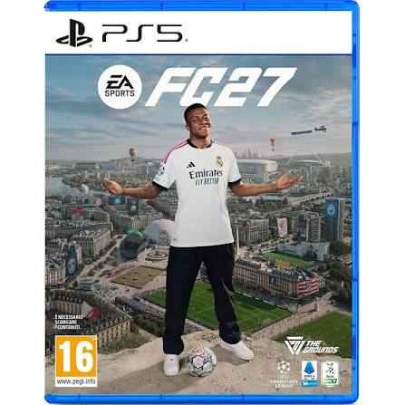

EA Sports FC 27 è un videogioco di simulazione calcistica sviluppato da EA Vancouver e EA Romania e pubblicato da EA Sports. È stato rilasciato il 25 settembre 2026 per Windows , PlayStation 4 , PlayStation 5 , Xbox One , Xbox Series X/S , Nintendo Switch e Nintendo Switch 2. La versione asiatica è stata rilasciata il 2 ottobre 2026 in Corea del Sud ed è prevista la sua uscita nei mercati di Thailandia e Vietnam nelle settimane successive e nei mercati cinesi due settimane dopo. È il quarto capitolo della serie EA Sports FC , successore di EA Sports FC 26 , e il 34° capitolo complessivo dei giochi di simulazione calcistica di EA Sports. La copertina della Standard e della Ultimate Edition presenta Kylian Mbappé , mentre la copertina della Ultimate Plus Edition presenta sia Mbappé che Jude Bellingham .EA Sports FC 27 introduce movimenti dei giocatori più fluidi, calci d'angolo dinamici , una migliore consapevolezza offensiva, una difesa incentrata sul giocatore progettata per il gioco competitivo e ulteriori perfezionamenti del gameplay basati sul feedback della community. I nuovi aggiornamenti del gameplay includono una difesa manuale migliorata, stili di gioco riequilibrati che pongono maggiore enfasi sugli attributi del giocatore, dribbling sbilanciato per giocatori agili, un comportamento della CPU più intelligente, interazioni fisiche più realistiche, effetti ambientali migliorati e cursori di gioco ampliati per un maggiore controllo sulle impostazioni della partita.
69,99€
Standard Edition